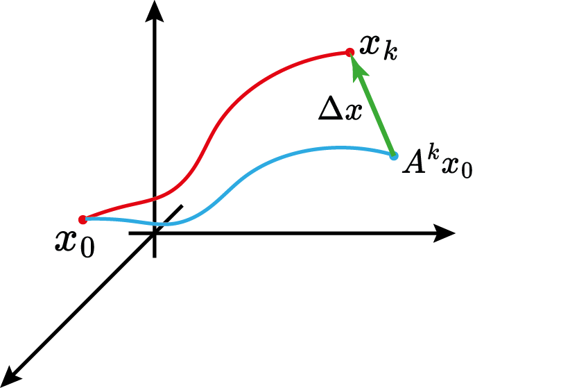
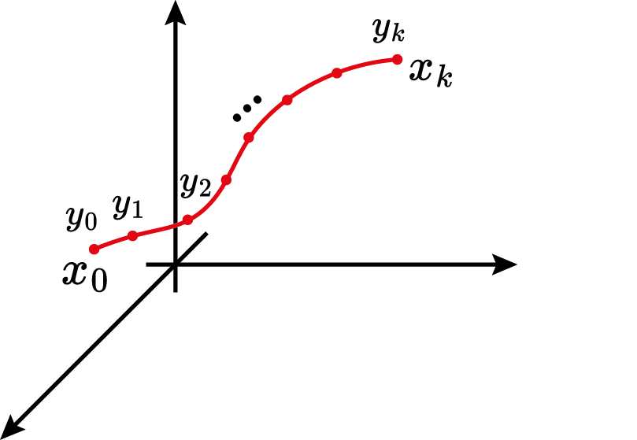

Stability of Linear Systems
Prof. Dr. Marcos Rogério Fernandes
April 02, 2025
Objectives:
The objectives of this class are:
- Cover the ideas of Lyapunov Stability for linear systems;
- Introduce the concepts of polytopic uncertainty;
- Analyze the quadratic stability condition;
- Show examples
Full Controllability
Lemma: The par $(A,B)$ is controllable if and only if the matrix $$ \mathcal{C}=\begin{bmatrix} B & AB & \cdots & A^{n-1}B \end{bmatrix}\in\mathbb{R}^{n\times mn} $$ has full rank.
Full Controllability
$$ \Delta x\in \mathcal{Range}\{\mathcal{C}\},\quad \forall \Delta x \in \mathbb{R}^n $$
Full Controllability
Linear System of equations $$ \Delta x = \mathcal{C}\vec{\gamma} $$ such as $\Delta x \in\mathbb{R}^n$, $\mathcal{C}\in\mathbb{R}^{n\times mk}$ and $\vec{\gamma}\in\mathbb{R}^{mk}$.
$$ \vec{\gamma}=? $$Full Observability
Lemma: The par $(A,C)$ is observable if and only if the matrix $$ \mathcal{O}=\begin{bmatrix} C\\ CA\\ \vdots \\ CA^{n-1} \end{bmatrix}\in\mathbb{R}^{pn\times n} $$ has full rank.
Full Observability
$$ \Delta y\in \mathcal{Range}\{\mathcal{O}\},\quad \forall \Delta y \in \mathbb{R}^{pk} $$
Observability
Full Observability
Linear System of Equations $$ \Delta y = \mathcal{O}x_0 $$ such as $\Delta y \in\mathbb{R}^{pk}$, $\mathcal{O}\in\mathbb{R}^{pk\times n}$ and $x_0\in \mathbb{R}^{n}$.
$$ x_0=? $$Stability
The state-space system is stable in discrete time if $$ \begin{aligned} |\lambda\{A_d\}| < 1 \end{aligned} $$
Stability
The state-space system is stable in continuous time if $$ \begin{aligned} \text{real}(\lambda\{A\}) < 0 \end{aligned} $$
Stability: continuous vs discrete

Lyapunov Stability: discrete time
If there exists a function $V:\mathbb{R}^n\to \mathbb{R}$ such that $$ V(x_k)>0,\quad \forall x_k\in\mathbb{R}^n \\ V(x_k)=0 \Leftrightarrow x_k=0 $$ and $$ V(x_{k+1})-V(x_{k}) \le 0 $$ then the system is stable (BIBO).
Lyapunov Stability: discrete time
If there exists a function $V:\mathbb{R}^n\to \mathbb{R}$ such that $$ V(x_k)>0,\quad \forall x_k\in\mathbb{R}^n \\ V(x_k)=0 \Leftrightarrow x_k=0 $$ and $$ V(x_{k+1})-V(x_{k}) < 0 $$ then the system is asymptotically stable to zero.
Lyapunov Stability: discrete time
Energy function:
For linear systems, the energy function
$$ V(x_k)=x_k^\trp P x_k,\quad P=P^\trp \succ 0 $$
Lyapunov Stability: discrete time
$$ V(x_{k+1})-V(x_k)=x_{k+1}^\trp Px_{k+1}-x_k^\trp Px_k < 0 $$ Since, $$ x_{k+1}=A_dx_k $$ then $$ A_d^\trp PA_d -P < 0 $$
Lyapunov Stability: discrete time
A discrete-time state-space system is asymptotically stable if and only if there exists a matrix $P=P^\trp \in\mathbb{R}^{n\times n}$ such that
$$ P\succ 0 \\ A_d^\trp PA_d -P \prec 0 $$
Linear Matrix Inequality (LMI)Lyapunov Stability: discrete time
A discrete-time state-space system is asymptotically stable if and only if there exists a matrix $P=P^\trp\in\mathbb{R}^{n\times n}$ such that
$$ P\succ 0, \\ A_d^\trp PA_d -P = -Q, \quad Q\succ 0 $$
Linear system of equations!Kronecker product
Define the vectorization operator $\text{vec}(A)$ as the vector formed by stacking the columns of $A$ on top of each other.
$$ \text{vec}(ABC)=(C^\trp \otimes A)\text{vec}(B) $$
Lyapunov Stability: discrete time
$$ \text{vec}(A_d^\trp PA_d -P) = -\text{vec}(Q)\\ $$ Thus,
$$ \Rightarrow \underbrace{(A_d^\trp \otimes A_d-I)}_{M}\underbrace{\text{vec}(P)}_{p} = \underbrace{-\text{vec}(Q)}_{q} $$
Lyapunov Stability: discrete time
$$ \text{vec}(A_d^\trp PA_d -P) = -\text{vec}(Q)\\ $$ Thus,
$$ p=M^{-1}q $$
Lyapunov Stability: continuous time
If there exists a function $V:\mathbb{R}^n\to \mathbb{R}$ such that $$ V(x)>0,\quad \forall x\in\mathbb{R}^n \\ V(x)=0 \Leftrightarrow x=0 $$ and $$ \dot{V}(x) \le 0 $$ then the system is stable (BIBO).
Lyapunov Stability: continuous time
If there exists a function $V:\mathbb{R}^n\to \mathbb{R}$ such that $$ V(x)>0,\quad \forall x\in\mathbb{R}^n \\ V(x)=0 \Leftrightarrow x=0 $$ and $$ \dot{V}(x) < 0 $$ then the system is asymptotically stable to zero.
Lyapunov Stability: continuous time
Energy function:
For linear systems, the energy function
$$ V(x)=x^\trp P x,\quad P=P^\trp \succ 0 $$
Lyapunov Stability: continuous time
$$ \dot{V}(x)= \frac{dV}{dx}\dot{x} $$ Since, $$ \dot{x}=Ax $$ then $$ A^\trp P+PA < 0 $$
Lyapunov Stability: continuous time
A continuous-time state-space system is asymptotically stable if and only if there exists a matrix $P=P^\trp \in\mathbb{R}^{n\times n}$ such that
$$ P\succ 0 \\ A^\trp P+PA \prec 0 $$
Linear Matrix Inequality (LMI)Lyapunov Stability: continuous time
A discrete-time state-space system is asymptotically stable if and only if there exists a matrix $P=P^\trp\in\mathbb{R}^{n\times n}$ such that
$$ P\succ 0, \\ A^\trp P+PA = -Q, \quad Q\succ 0 $$
Linear system of equations!Kronecker product
Define the vectorization operator $\text{vec}(A)$ as the vector formed by stacking the columns of $A$ on top of each other.
$$ \text{vec}(ABC)=(C^\trp \otimes A)\text{vec}(B) $$
Lyapunov Stability: continuous time
$$ \text{vec}(A^\trp P+PA) = -\text{vec}(Q)\\ $$ Thus,
$$ \Rightarrow \underbrace{(I \otimes A^\trp + A^\trp\otimes I)}_{M}\underbrace{\text{vec}(P)}_{p} = \underbrace{-\text{vec}(Q)}_{q} $$
Lyapunov Stability: continuous time
$$ \text{vec}(A^\trp P+PA) = -\text{vec}(Q)\\ $$ Thus,
$$ p=M^{-1}q $$
Uncertain Matrix $A$: example
RLC Circuit: $$ \begin{bmatrix} \dot{x}_1 \\ \dot{x}_2 \end{bmatrix}=\begin{bmatrix} 0 & 1 \\ -\frac{1}{LC} & -\frac{R}{L} \end{bmatrix} \begin{bmatrix} x_1 \\ x_2 \end{bmatrix}+\begin{bmatrix} 0 \\ \frac{1}{LC} \end{bmatrix}u $$
Suppose $$ R_\text{min}\le R\le R_\text{max} $$Polytopic Matrix $A$
Consider the uncertain matrix $A$ as a linear combination of $m$ matrices $A_i$: $$ A(\alpha)=\alpha_1A_1+\alpha_2A_2+\cdots+\alpha_NA_N $$ where $\alpha_i\in\mathbb{R}^+$ and $\sum_{i=1}^N \alpha_i=1$. Then $A(\alpha)$ is called a polytopic uncertain matrix.
Dynamic system: $$ \dot{x}=A(\alpha)x $$Robust Lyapunov Stability: continuous time
$$ \exists P(\alpha)=P(\alpha)^\trp \succ 0 \\ A(\alpha)^\trp P(\alpha)+P(\alpha)A(\alpha) \prec 0\\ \forall \alpha \in \Lambda_N=\{\alpha \in \mathbb{R}^N:\sum_i\alpha_i=1 \text{ and } \alpha_i\ge 0\} $$
Parameter-dependent LMI!Quadratic Stability: continuous time
$$ \exists P=P^\trp \succ 0 \\ A(\alpha)^\trp P+PA(\alpha) \prec 0\\ \forall \alpha \in \Lambda_N=\{\alpha \in \mathbb{R}^N:\sum_i\alpha_i=1 \text{ and } \alpha_i\ge 0\} $$
Parameter-dependent LMI!Quadratic Stability: continuous time
$$ \exists P=P^\trp \succ 0 \\ A_1^\trp P+PA_1 \prec 0\\ A_2^\trp P+PA_2 \prec 0\\ \vdots \\ A_N^\trp P+PA_N \prec 0\\ $$
LMI!Quadratic Stability: discrete time
$$ \exists P=P^\trp \succ 0 \\ A_1^\trp PA_1-P \prec 0\\ A_2^\trp PA_2-P \prec 0\\ \vdots \\ A_N^\trp PA_N-P \prec 0\\ $$
LMI!Quadratic Stability: continuous time
$$ \dot{x}=A(\alpha(t))x $$
The system is asymptotically stable if$$ \exists P=P^\trp \succ 0 \\ A_i^\trp P+PA_i \prec 0\\ \forall i=1,\ldots, N $$
Homework (T5)
i) Develop a MATLAB routine that plots the root locus of the matrix $A(\alpha)$ by testing various values of
$\alpha$ for $N=3$ random vertices.
ii) After, implement a script in MATLAB to check the stability of $A(\alpha)$ using Yalmip+SeDuMi